Case study 01 Operating model
Designing an AI-native engineering operating model
The target is minimum human coordination per successful objective—not maximum agent activity.
Independent, single-operator research conducted over five months; the measured attention study covered 30 days.
Executive question
What changes when software implementation is increasingly performed by AI?
I wanted firsthand evidence from sustained operation, not isolated code suggestions. The test was a controlled environment in which AI agents performed bounded engineering work across multiple projects while I retained responsibility for objectives, architecture, constraints, and acceptance.
Hypothesis
Implementation capacity would stop being the main constraint.
The scarce resources would become problem choice, framing, architecture, decomposition, context, decision rights, verification, and human attention. That meant the system needed to organize around durable objectives rather than individual conversations.

What I designed
Persistent objectives, multiple specialist workers, and conventional software controlling authority.
- Objectives with success criteria that persist across sessions, bounded retries, worker replacement, and restarts.
- Several AI workers performing implementation, research, and review while one owner retains responsibility.
- Durable decisions, plans, operating rules, and handoffs outside any single model conversation.
- Conventional software controlling state, identity, permissions, external actions, and completion evidence.
What happened
The environment became a working laboratory—and made the human the bottleneck.
It produced working internal products and persistent workflows, including an executive command brief, delegated-work engine, observability and incident-investigation system, local knowledge service, multi-model decision review, native applications, and integration services.
But more AI capacity did not automatically create human leverage. Parallel agents made me the scheduler, message carrier, context manager, reviewer, and cleanup crew. Over 30 days, I retained 4,419 prompts and manually reviewed 240 samples to understand that burden.
What changed
Supervision moved from the session to the objective.
The system shifted toward persistent objectives, deterministic routing, explicit decision boundaries, durable context, automatic closeout, structured escalation, and evidence-based completion. Conditions without a single owner moved into a queue that deduplicated and routed them instead of asking me to coordinate them through prose.
Enterprise implication
Measure the human coordination required for a successful outcome.
Engineering leadership should ask how the operating model changes when implementation is no longer the constraint it used to be. Agent activity is not the answer. The more useful measure is how much scarce human attention each successful objective consumes.
Evidence and limits
The full source case study and operator-attention exhibit are in the GitHub repository. The environment was independent and single-operator. The study describes this environment and does not prove productivity gains for other people or organizations.